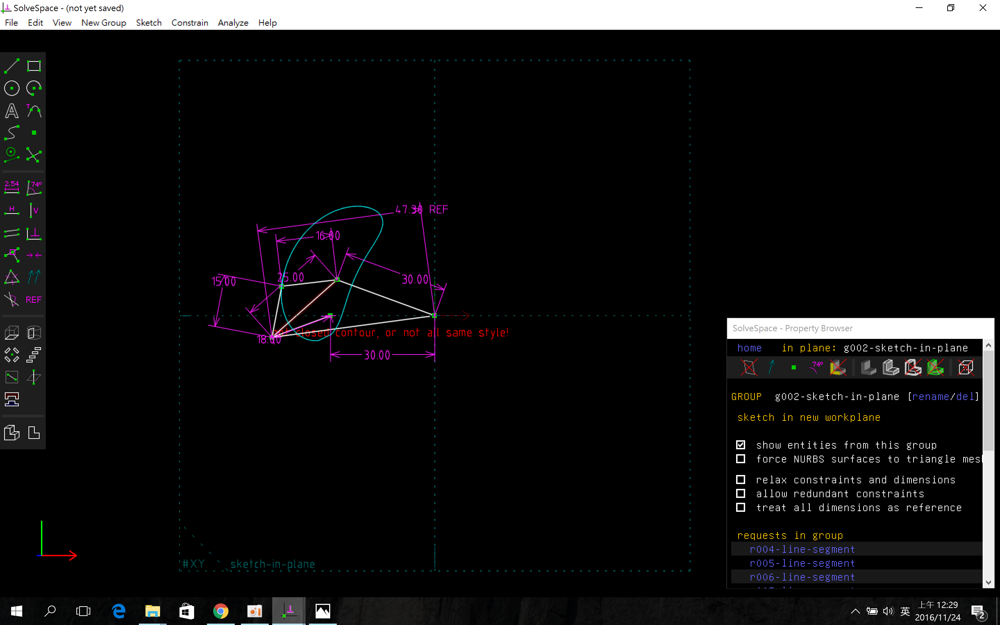
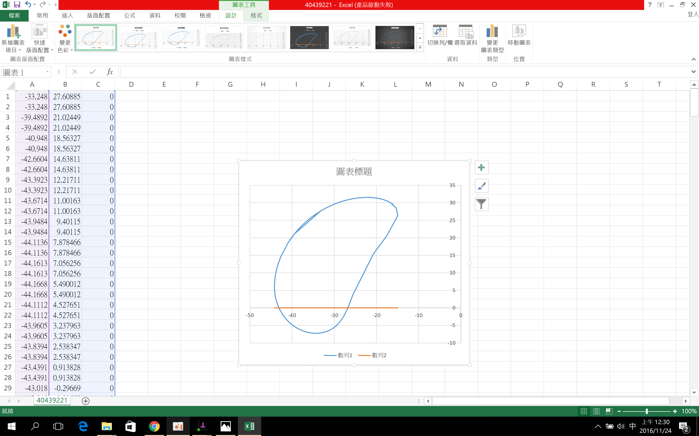

課程總結
創造力三元素, 機械設計的六種表達, 協同設計的四大面向. 1.強化創造能力 - 自學力、程式力與想像力 (Creative Competencies) 2.熟習六種表達 - 口語、文字、2D、3D、理論與實體表達 (Six Presentation Methods) 3.融入協同設計 - 電腦、網路、軟硬體工具與協同專案 (Collaborative Designs)上課筆記
網址:http://chiamingyen.github.io/kmolab/blog/index.html 下載網址:140.130.17.17(只能在學校裡使用) 2016fall裡的檔案倒數兩個擇一下載(ana2016fall_os(3.0g)or mini2016fall.7z(98m)) 1.創2016fallcadp_hw 將README打勾 格式:python 加密:agpl 新增gh-pages分支 進入setting 點branches 將master變更為gh-pages 點update 2.git clone 2016fallcadp_hw cd 2016fallcadp_hw git branch git checkout gh-pages git branch(再次檢查) 3.創 學號.github.io 將README打勾 格式:python 加密:agpl 點選create new file 打入index.html 點commit new file 4.創 2016fallcadp_bg100(組別) 將2016fallcadp_bg100 clone下來 2016fallcadp_bg100 git branch git checkout gh-pages git branch(再次檢查) 將自己的2016fallcadp_hw clone網址複製 git submodule add -b gh-pages 網址 學號 git staus(檢查) 依序將隊友的資料夾加入 git add -A git commit -m "名稱" git push origin gh-pages 1.radinsed半徑 2.diameter直徑 3.place放置 4.symmetrically對稱 5.lnitially開始 6.oriented定位 7.axes軸 8.indicated表示 9.respectively分別 10.parallel平行 11.extruding長出 12.automatically自動 13.coincident一模一樣 14.constraint約束 15.horizontal橫 16.perpendicular垂直 17.step圖(格式) 錄影工具:sharex 1.paths 2.task → screen recorder → options 開始錄製:shift+ print screen 射出成型軟體:moldex3d proxy設定:proxy.mde.tw 通訊阜:3128 去聲音指令:ffmpeg.exe -i 檔名 -c copy -an out.mp4 字幕指令:ffmpeg.exe -i out.mp4 -vf subtitles=in.srt out2.mp4 安裝pelican指令:pip install pelican 刪除指令:git rm -rf 下載分支內的東西:git submodule update --init --recursive 子模組的對應版本更新到目前最新提交:git submodule foreach "(git checkout gh-pages; git pull)&"作業1
心得:我是新轉來的同學,因為沒有接觸過GITHUB這個東西所以剛學有點吃力,這一次的作業謝謝我們這組的團隊合作
作業2
心得:使用過兩種軟體,使用完後還是比較習慣使用solavespace的介面跟快捷鍵，solavespace在視角轉換上並沒有像其他autodesk的繪圖軟體一樣方便，在畫2D的時候常常容易按到轉換視角變成3D，希望能在改善。
作業3 week1
作業3 week2 2-1
作業3 week2 2-2
作業3 week2 2-3
作業3 week2 2-4
作業3 week2 2-5
作業3 week3
心得:在經過我們小組的討論後,完成了這一次的作業,我不僅學到了很多知識,也增加了我團隊合作的能力,我們討論的過程也學到很多
作業4 week4
作業4 week5 5-1
作業4 week5 5-2
作業4 week5 5-3
作業4 week6
心得:我覺得這一次我們這組在討論的過程中,遇到最大的困難就是叫零件那裡,但最後還是被我們解決了,組員太棒了讚
作業5 week7
作業5 week8
作業5 week9
心得:有一點不太懂這一次的week7想要我們做的事,我們做起來有一點卡卡的,不太知道怎麼做
作業6 week10
作業6 week11-1
作業6 week11-2
作業6 week12
心得:大家一起努力完成一件事情真的很棒,每一次開啟onshape,每一個人都會提出好的解決方法,好讓大家從錯誤中學習
上課作業
利用 Solvespace Analyze-Trace Point-Stop Trace 得到繞行路徑:

將所得到的點座標 .csv 以 Excel 畫圖, 得到:

首先利用 Brython, 讀取資料目錄中的 40439221.csv 座標檔案, 然後以 splitlines() 及 split() 取出各點的 x 座標與 y 座標後, 將點連成路徑曲線如下:
Solvespace 組合圖